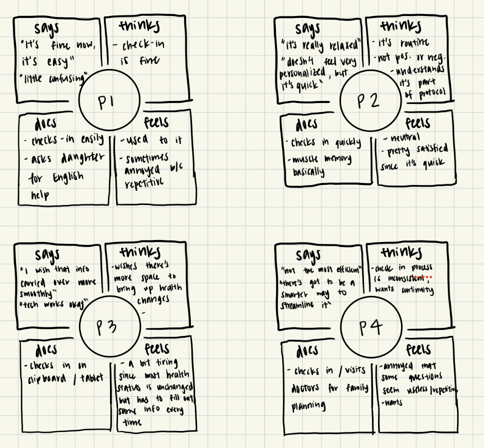
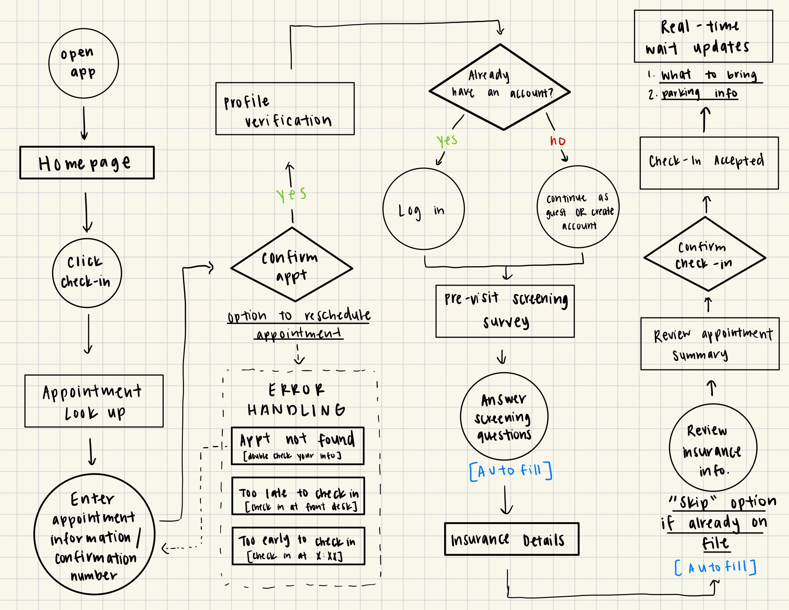
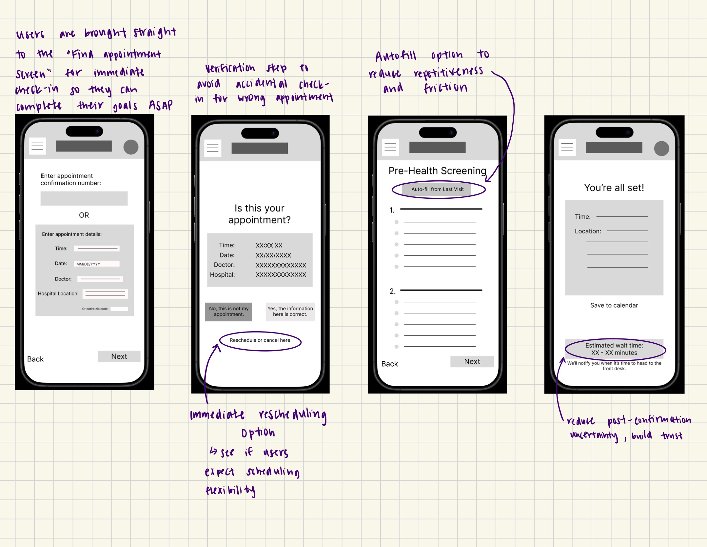
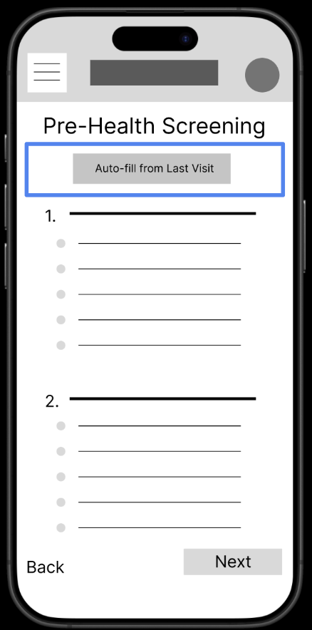
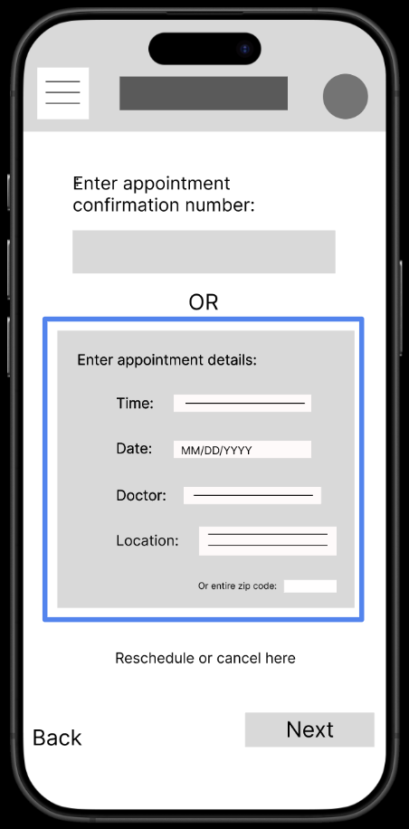
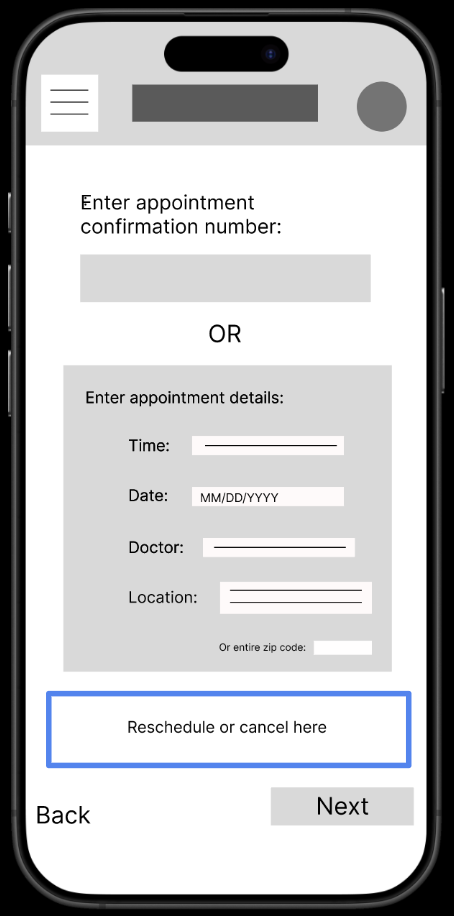
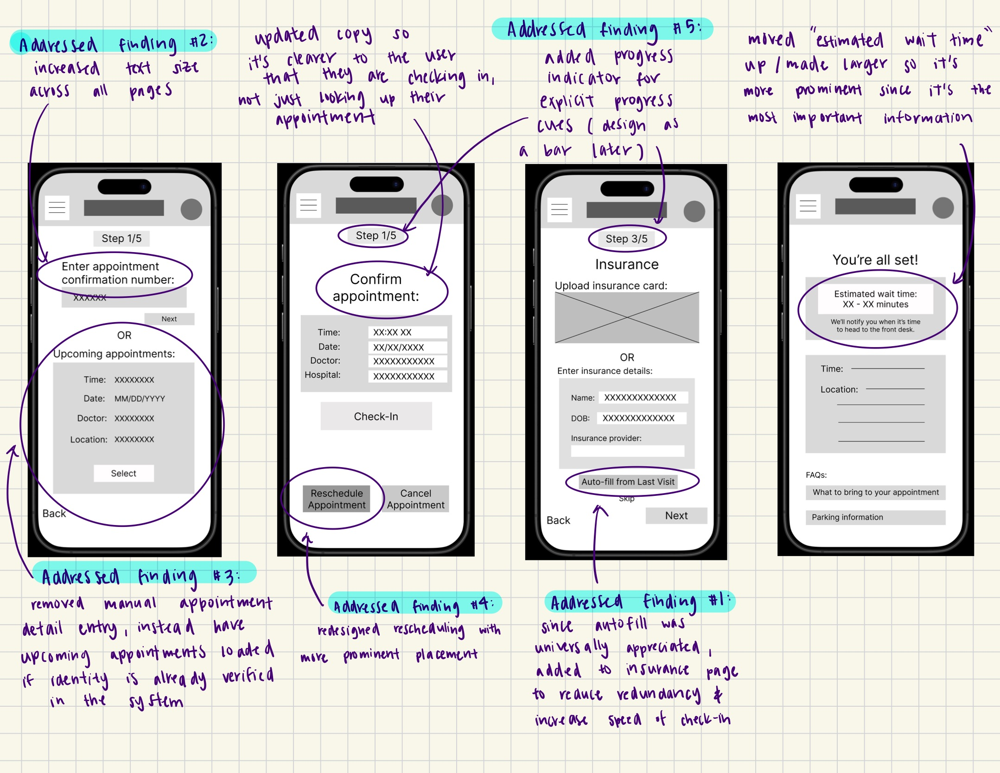

TLDR
- The obvious problem
- Medical check-in is repetitive. Everyone knows this, and this isn't worth a study on its own.
- The actual finding
- Repetition isn't experienced as inefficiency, but it's seen as evidence that nobody read the last form. Participants who'd disclosed something significant and then been asked again the next visit felt like their provider wasn't paying attention and they didn't feel heard.
- What that changed
- The design goal changed from "fewer fields" to "visible continuity." Autofill saves time, and showing someone that their previous answers carried forward is what addresses the trust problem.
- What testing caught
- 5/5 participants struggled with the rescheduling flow, which wasn't the feature I was testing. The thing I built the study around passed immediately and told me the least.
Project overview
Background: The check-in process for a medical appointment is often a frustrating and time-consuming experience for patients: redundant paperwork, unclear expectations and next steps, and forms that don't include all scenarios or adapt to individual health needs. I conducted foundational and evaluative research to better understand the patient check-in experience and inform the design of a mobile check-in app that reduces friction, builds trust, and meets diverse user needs.
Central question
How might we redesign the medical check-in experience to reduce repetition, build trust, and adapt to diverse patient needs?
Research objectives & questions
To inform the design of a mobile medical appointment check-in app, I conducted foundational research to understand how patients currently experience the check-in process, what barriers prevent a smooth experience, and what features and functionality would make an intuitive and efficient check-in experience.
Research questions:
- What are the most common pain points users encounter during in-person medical appointment check-in? Which are most likely to drive demand for an alternative solution?
- What tasks do patients expect or want to complete before arriving at an appointment?
- Among patients who have used existing digital check-in tools, what features do they find most and least useful, and what’s missing?
- What factors (e.g., time saving, reduced paperwork, appointment reminders, clarity about next steps) would influence a patient’s decision the most to use a mobile check-in app instead of the traditional, in-person check-in process?
Phase 1: Discovery research
Method: Foundational user interviews
To understand current check-in experiences across a range of patient types, I conducted semi-structured interviews.
Participants: 4 participants (2 male, 2 female), ages 22-61, representing a range of health complexity, visit frequency, and technology comfort levels. Recruited through personal networks and public communities.
| Participant | Age | Health Complexity | Visit Frequency | Tech Comfort |
|---|---|---|---|---|
| P1 | 61 | Low | 2-4 times/year | Low |
| P2 | 22 | Low | 1 time/year | Advanced |
| P3 | 23 | High (chronic conditions) | 4-6 times/year | Intermediate |
| P4 | 37 | Moderate (family planning) | 4-6 times/year | Advanced |
Format: 15-minute semi-structured interviews, conducted synchronously via Zoom or in-person (located in the United States)
Interview focus areas:
- Current check-in process from arrival to seeing the doctor
- Types of questions asked during intake
- Feelings about form completion (ease, relevance, repetitiveness)
- Experiences with digital vs. paper check-in
- Moments of confusion, frustration, or friction
- Unmet needs and desired improvements
Key interview findings
1Repetitiveness is the biggest pain point across all users.
Every participant expressed frustration with having to answer the same questions visit after visit, regardless of whether their health information had changed.
I feel like I answer the same questions every year, even though nothing has changed. I wish they'd remember my last answers unless something's new.
P2, age 22
I shouldn't have to start from scratch every time — I have the same conditions, the same meds. Can't the system remember me?
P3, age 23
There's got to be a smarter way to streamline it.
P4, age 37
2Forms lacked space for context and customization, making it difficult for participants to detail their unique health needs.
Participants with chronic conditions, language barriers, or specific goals (i.e., family planning) struggled to communicate important context through standardized forms.
There's no space to explain that my waist pain only hurts after work. I try to tell the nurse later.
P1, age 61
When I say I'm gluten-free, there's nowhere to explain if it's an allergy, intolerance, or autoimmune thing. When I say yes to fatigue, there's no way to explain context - like "I just started a new medication" vs. "I'm struggling."
P3, age 23
3Lack of continuity across visits erodes trust, especially for patients with long-term, ongoing care goals.
Participants who had shared specific health information in previous visits, such as family planning intentions, were frustrated when that information didn't carry forward and they had to repeat themselves during their next visit — making them doubt that providers were reading their information.
I don't mind checking in. I just want it to make sense for why I'm here and not waste my time with questions that don't apply.
P4, age 37
The inconsistency across visits is frustrating. Sometimes I get forms in advance, sometimes I don't. Sometimes they ask about family planning, sometimes they don't — even though I mentioned it last visit.
P4, age 37
4Digital check-in tools are inconsistent and sometimes unreliable.
Participants who had used tablets or apps reported technical issues or redundant processes.
The tech works okay, but sometimes it logs out, lags, or the UI is just not that pleasing, which makes an already boring, technical process even more frustrating.
P3, age 23
Sometimes I check in ahead of the appointment through a digital link, and then they also make me do it on the iPad in person, so it gets repetitive.
P4, age 37
Empathy maps
I created empathy maps for each participant to organize what they said, thought, felt, and did during the check-in process.

User pain points
- P1
- Language barriers, limited space to explain, uncertainty about whether answers are seen.
- P2
- Lack of personalization, irrelevant questions for routine visits, doubt about provider engagement with responses
- P3
- Time-consuming repetition, no space for health context, mental health screening feels vague, must repeat full history every visit
- P4
- Lack of continuity, previous visit goals get lost, inconsistent digital/paper processes, forms don't adapt to visit type
Personas
Based on interview data, I developed three personas representing distinct user archetypes:
Manya Chung
Manya is an immigrant mother who coordinates healthcare visits for herself and her husband. Her English is functional but not fluent, and she relies on her daughter for translation support when available. She's familiar with the check-in process after years of repetition, but struggles when forms require detailed explanations of health conditions.
I just want to make sure everything is accurate, and nothing is missing. The forms are always the same - but sometimes it's hard to be detailed, especially with my limited English.
Goals
- Accurately report health information even when her daughter isn't there to translate
- Understand the purpose of the questions being asked
Pain Points
- Repetitive forms
- Unsure if her answers reach the doctor
- No space to explain context, compounded by language barriers
Melissa Robbins
Melissa visits the doctor frequently to manage digestive issues, anxiety, depression, and food sensitivities. She's frustrated by systems that aren't built for patients with complex, ongoing health needs and often feels like she's starting from scratch every visit.
I shouldn't have to start from scratch every time — I have the same conditions, the same meds. Can't the system remember me?
Goals
- Save time by avoiding redundant forms
- Receive nuanced care that considers both mental and physical health
- Communicate changes clearly without repeating her entire history
Pain Points
- Emotionally drained by re-entering health history
- Unsure if form responses are reviewed
- Limited space to clarify conditions or medication context
- No system memory across visits
Ryan Khan
Ryan is a tech-savvy professional who's been visiting his doctor more frequently as he and his partner plan to start a family. He expects modern, efficient systems and gets frustrated when healthcare tools feel outdated, irrelevant, or disconnected from his stated care goals.
I don't mind checking in - I just want it to make sense for why I'm here and not waste my time with questions that don't apply.
Goals
- Pre-fill and sync past information to save time
- Receive visit-specific, relevant health questions
- Track family planning and personal health records across visits
Pain Points
- Frustrated by repeating medical history
- Inconsistent check-in methods (iPad vs. paper)
- Family planning details get missed or not followed up on
User stories
As an immigrant mother of two who is responsible for my household’s healthcare,
I want to be able to accurately report and understand health information,
so that I can fill things out correctly and confidently.
As someone with a complex medical history and a frequent patient,
I want the system to remember my medical conditions,
so that I don’t have to re-enter the same information each time.
As a patient planning a family,
I want the system to track that goal,
so that my visits feel connected to what I’ve already shared and I know my information has been received.
Problem & hypothesis statements
Problem
Manya is a low-tech immigrant patient who needs a simple, language-accessible way to check in at her doctor's office because she doesn't want language ability to cause her to miss important health details.
Hypothesis
If Manya is given the option to check in using a bilingual form and the reviewing staff can access that language, then she will feel more confident and complete the process without confusion.
Problem
Melissa is a frequent patient with complex health needs who needs a personalized, adaptive check-in experience that remembers her health history because she's tired of re-entering the same information and frustrated when there's no space to explain what's changed.
Hypothesis
If the check-in system automatically remembers Melissa's health history and includes open-answer sections, then she will feel heard, less frustrated, and have more efficient visits.
Problem
Ryan is a tech-savvy professional planning for a family who needs a check-in system that retains and acknowledges his visit goals because he's repeatedly shared his plans, but still receives generic intake forms that don't reflect his ongoing care needs.
Hypothesis
If the check-in system retains and displays past and current visit goals like family planning, then Ryan will trust the system more and feel acknowledged.
Value proposition
Based on research findings, I defined the core value proposition for the mobile check-in app:
Product Features:
- Adaptive screening forms that remember previous answers and adjust based on visit type
- Easy access to previous forms from prior visits
- Language and accessibility support (translations, adaptable text sizes)
- Free-text fields for patients to explain unique health contexts
- Visible confirmation that forms were opened and reviewed by providers
Value statement
This app reduces friction, builds trust, and saves time for patients with diverse needs. By connecting the check-in experience to each patient's unique health journey, the app transforms a generic, repetitive administrative process into a thoughtful, personalized moment of care.
Initial lo-fi wireframes
Goal: Design a check-in experience that:
- Reduces cognitive load
- Minimizes redundant effort
- Reduces uncertainty during the waiting period
Design principles that guided the flow:
- Reduce anxiety at every step
- Respect users' time
- Verify first, authenticate later. Let users confirm their appointment details and start check-in before asking them to login, so that one-time and returning users can prove the app's relevance to them before committing to authentication.
User flow
Based on research insights, I mapped the intended user flow for the mobile check-in experience.

Four phases of the check-in process:
- Find appointment
- Reduces friction for one-time users, patients who don't remember their accounts, and those in a rush
- This proves the app's relevance before asking for the user's commitment
- Identity verification
- Lightweight verification rather than full onboarding
- This is flexible for 1) returning users who want to check in quickly, 2) first-time users who are unsure about creating an account, and 3) frequent patients who prefer long-term convenience
- Pre-visit requirements
- Both insurance and screening information pages include autofill to reduce friction
- Check-in confirmation & reduce uncertainty
- I intentionally separated user action from the system state
Having the distinct four phases allowed me to separate the physical must-haves of the check-in process from the emotional needs (i.e., reduce uncertainty, mitigate friction), ensuring that I could address everything.
Wireframes

Phase 2: Concept validation
Method: Moderated usability testing
To validate whether the check-in experience was intuitive and efficient, I conducted a moderated usability study using a clickable low-fidelity prototype.
Participants: 5 participants recruited through personal networks and public communities (3 male, 2 female), ages 20–68, with varying levels of technical comfort.
| Participant | Age | Tech Comfort | Background |
|---|---|---|---|
| P1 | 40 | Intermediate | Working white-collar adult. They use their phone daily and prefer to check in to appointments on their phone while on the go. While they don't have trouble with navigating most apps, they are also not incredibly familiar with advanced apps (they aren't interested in tech or work in the industry). |
| P2 | 68 | Low | Retired senior citizen. They use a smartphone mainly for calls and messages only, and prefer to use a laptop for doctor appointment portals when necessary. However, they favor the traditional paper check-in process. |
| P3 | 20 | Advanced | College student entering the tech industry. They use their phone daily for all everyday tasks, if possible. They are quick with technology and understand modern UX patterns. |
| P4 | 38 | Intermediate | Parent of multiple kids, is often on-the-go and juggling multiple tasks at once. They need everything to be fast, streamlined, and obvious. |
| P5 | 30 | Advanced | Working white-collar adult. They work in finance and enjoys clean, logical flows. Because of the nature of their work, they appreciate structure and efficiency in all of their tasks, especially monotonous ones. |
Format: 10-minute sessions, synchronous remote via Zoom or in-person (located in the United States)
Methodology:
- Think-aloud protocol during task completion
- Scenario-based tasks using a clickable Figma prototype
- Post-task interview
Research Questions:
- How long does it take a user to complete the check-in process?
- Do users notice and use the "auto-fill from last visit" feature? Do they find it useful and trustworthy, or do they prefer to fill everything in manually?
- What can we learn from the steps users take to check in for a health appointment?
Tasks:
- Check in using your confirmation number.
- You lost your confirmation number. Check in using only your appointment details.
- Reschedule your appointment.
- Autofill your information on the screening survey page
Key study findings
Finding 1
Auto-fill was immediately noticed and appreciated — but trust varies.
5 out of 5 participants noticed the auto-fill feature and expressed relief at not having to re-enter information. This means that they enjoyed the efficiency and time saver of autofill. However, 1 participant hesitated before confirming the pre-filled information.
Great — that saved a ton of time.
P1, age 40
Love that. Should be default.
P3, age 20
Thank God there's autofill. I don't have the time to type everything out.
P4, age 38
Autofill is great — hoping it's secure.
P5, age 30
Insight
Users value automation that removes repetitive data entry. This aligns with discovery research findings, where all participants cited repetitiveness as a major pain point.
Design implication
Since autofill was universally praised, make it the default for the screening surveys and expand autofill capabilities where possible (e.g., pre-populate insurance information, pharmacy details, emergency contacts from previous visits).


Finding 2
Text size and readability created a significant accessibility barrier.
2 out of 5 participants struggled to read the small text. This means that the text size and UI need to be updated to be more accessible for all.
Oh boy, these letters are small.
P2, age 68
Insight
Text size and UI elements need to be updated to ensure accessibility for all users, regardless of visual ability.
Design implication
Increase font size throughout the app, strengthen contrast, and simplify dense screens to reduce cognitive load for all users. Consider adding a text size adjustment option in settings to ensure accessibility for all users.
Finding 3
Requiring manual appointment entry was a major pain point.
5 out of 5 participants were mildly annoyed with having to input all of their appointment details if they were unable to find their confirmation number to proceed with check-in. Users found this to be time-consuming and created friction.
Typing all this is a lot… but okay.
P2, age 68
Honestly, my upcoming appointment information should already be auto-filled/somewhere on the platform so I wouldn't even have to type in a confirmation number, much less the details manually to find my appointment.
P3, age 20
Can’t it just find my appointment automatically?
P3, age 20
Insight
Users need a more efficient way to fill in appointment details when they don't have their confirmation number readily available.
Design implication
Allow users to verify their identity, such as requiring their name & date of birth or their patient portal login, so the system can automatically look up upcoming appointments without requiring confirmation numbers or full manual entry. Reduce the number of required fields where possible.
Finding 4
Rescheduling was too hidden, leading to confusion across all participants.
5 out of 5 participants were confused, struggled, or dissatisfied with the rescheduling workflow. The rescheduling button was too hidden or didn’t appear in the workflow early enough.
Hmm… I don’t see any obvious button for changing my appointment on the home screen.
P1, age 40
Let me check this… box? Oh — that’s a menu.
P2, age 68
Feels a little buried.
P3, age 20
This should be on the main page — it’s too many taps.
P4, age 38
I’d prefer a shortcut from the homepage.
P5, age 30
Insight
Users need a more obvious and immediate way to reschedule their appointment. The current placement creates unnecessary friction for a common and time-sensitive task.
Design implication
Surface the reschedule option earlier in the flow — to either the home screen or the appointment overview screen — and increase its visual prominence through clear labeling so users can easily locate this.

Finding 5
Navigation was intuitive, but one participant expected a progress indicator.
5 out of 5 participants moved through the flow without confusion. However, one participant wanted to know how many steps remained before submission.
It'd be helpful to see how far through I am with checking in. That would make me feel more confident in working through the check-in process without feeling overwhelmed.
P3, age 20
Insight
While the overall navigation is clear, some users benefit from explicit progress cues to reduce uncertainty in how they're doing with the check-in.
Design implication
Add a progress indicator (i.e., a progress bar or "Step 2 of 4") to help users understand where they are in the flow and how much remains.
Finding 6
Average check-in time was 3-4 minutes, meeting efficiency goals.
5 out of 5 participants completed the full check-in flow in an average of 3–4 minutes, compared to the 5–10 minutes reported in discovery interviews for paper and tablet forms.
Insight
The current streamlined flow and autofill features successfully reduced time-on-task.
Design implication
Since the efficiency goal was met, continue the streamlined flow in future iterations and use 3-4 minutes as the target.
Recommendations
Based on discovery and usability research, I recommend the following for the next iteration:
Priority 0
- Redesign the rescheduling workflow with prominent, early placement
- Increase text size and readability
- Replace manual detail lookup with loaded appointment details
Priority 1
- Maintain the simple confirmation number check-in flow
- Expand autofill to additional fields (insurance, pharmacy, emergency contacts)
- Add a progress indicator to the check-in flow
Priority 2
- Maintain clear labeling; add helper text for complex fields
Iterated lo-fi wireframes
After

Reflection
Limitations
- Convenience and small sampling
- Participants were recruited through personal networks and public communities, which may mean users were more comfortable providing feedback and had similar demographic profiles. Although I tried to find diverse participants with different needs and backgrounds, they still had overlapping similarities as they came from the same or adjacent communities. A larger, more systematically recruited sample would increase the confidence in my findings and provide more representative findings.
- Hypothetical scenario
- Participants weren't actually checking in for a real appointment, which may affect their urgency while completing the tasks, decrease their emotional investment, or increase their attention to detail, knowing that I'm observing them (Hawthorne effect).
- Low-fidelity
- This case study was very simple — the wireframes only tested flow and comprehension, neglecting visual design, accessibility, perceived trustworthiness, or performance.
- No real data
- I used placeholder data/health information, so it's difficult to gauge how much users actually trust the autofill or the accuracy/reliability of the check-in process and flow.
What I learned
This case study showed me the importance and detail that goes into usability testing beyond simply identifying usability issues or figuring out the user journey. Specifically, I learned just how much the quality of insights is directly influenced by how thoughtfully the study is designed, from participant recruitment and persona synthesis to interview structure and analysis.
Silence is a technique. When I was scripting my interviews for the foundational interviews and usability sessions, I became hyperaware of how easily subtle bias can creep into my questions and the overall conversation. I learned that even the smallest wording changes can imply a "correct" answer and that participants will look to me for validation. So, I became more intentional about my neutral prompts: "How confident do you feel right now?" or "Can you tell me more about what you're thinking?" I also let pauses run. I'm a talkative person, so my instinct is to fill gaps and follow up. But the shift was recognizing I wasn't having a conversation; I was conducting a structured observation. It was important to keep the conversation semi-structured to ensure we didn't stray off the path in conversation, or I didn't accidentally ask leading questions. Later on, I realized having this structure made it much easier to identify patterns across sessions, line up insights, and compare participant behaviors more consistently.
Synthesis is a step, not a formatting exercise. When I first started conducting user research, I would go straight from interview findings to recommendations. This time around, I took the time to identify patterns across participants, distinguish between isolated comments and recurring patterns, determine the severity and frequency of insights, then prioritize findings based on impact. This extra effort in pattern-driven insight synthesis was one of the most meaningful improvements in my research process and made me more confident in my recommendations, ensuring that they were soundly justified and impact-focused.
Because this was a healthcare tech scenario, I became more aware of the emotional layer of the user's journey. While all participants could, of course, complete the check-in process, what they talked about was their uncertainty about whether they'd done it right, what happened next, or how long it would take. That's not a usability problem in the task-completion sense, and it wouldn't show up in a success-rate metric. It's equally about perceived control and confidence. Going forward, I would conduct studies to further explore how certain design choices can impact anxiety, trust, etc.
What I'd change next time
While the lo-fi prototype offered a solid baseline for users to interact with, I'd like to perform a usability study with a more fleshed-out prototype next time so I can collect richer feedback from users. This includes real data or text instead of placeholder data, and also additional pages (i.e., insurance information, test results). I'd also like to recruit a larger, more diverse sample. Although the four discovery interviews and five usability participants provided useful directional insights, a larger sample would increase confidence in findings and also expose edge cases that the sample size would have missed. Specifically, I'd hope to find participants with varying accessibility needs, whether that's visual, motor, cultural, or language preferences. This time around, I focused on primary research, but performing a competitive analysis of existing check-in apps would definitely help me identify useful features that I could recommend that I may not have thought of.
Self-directed project. MedCheck is a concept app, not a shipped product; no real patient data was used at any stage. Participant quotes are de-identified.